Objetivo da atividade
- Fazer a predição linear "exata": estimar cada dado (amostra de áudio ou pixel) a partir dos vizinhos já conhecidos. No áudio usamos predição de ordem 1, x̂[n] = x[n-1]. Na imagem usamos o filtro de Paeth, o mesmo do formato PNG.
- Calcular o erro residual e[n] = x[n] - x̂[n], analisar sua distribuição e estimar a entropia, que é o número médio de bits por símbolo de um codificador ideal sem memória.
- Conferir que o sinal original volta exatamente a partir do resíduo (codificação sem perdas).
- Medir tamanhos com compressores sem perdas reais (FLAC no áudio e PNG na imagem) como referência prática.
- Dividir os papéis (analista de áudio, especialista em predição, analista de imagem e especialista em entropia), apresentar os resultados e discutir com a turma.
| Papel no roteiro | Material | Arquivo |
|---|---|---|
| Áudio 1 (previsível) | Piano com notas sustentadas | 31_piano.wav |
| Áudio 2 (imprevisível) | Música eletrônica com ruído | 32_eletronica_com_ruido.wav |
| Imagem 1 (previsível) | Desenho animado | 33_desenho_animado.png |
| Imagem 2 (imprevisível) | Foto de multidão | 34_multidao.png |
Integrantes do grupo
| Nome | RA | Bloco 1: áudio | Bloco 2: imagem |
|---|---|---|---|
| Fernando Hsiao | 11202231201 | Analista do piano (bloco A, repetido junto com o André) | Entropia da multidão (bloco D, repetido junto com a Isabella) |
| Isabella Pierina | 11202230474 | Analista da música eletrônica (bloco A) | Predição e entropia da multidão (bloco D) |
| Pedro Ricardo Cantu Benedetti | 11202230298 | Predição e entropia do piano (bloco B) | Analista do desenho animado (bloco C) |
| André de Brito Lins | 11201811173 | Analista do piano (bloco A) | Predição e entropia do desenho animado (bloco D) |
| Yasmin Ribeiro Santos | 11202321255 | Predição e entropia da música eletrônica (bloco B) | Analista da multidão (bloco C) |
Montagem e procedimento
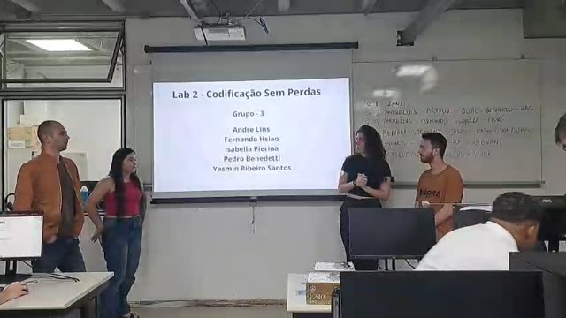

Como o laboratório foi feito
- Cada integrante rodou no Google Colab o notebook do seu papel (blocos A, B, C ou D), lendo os arquivos do grupo 3 no Google Drive.
- Bloco 1 (áudio): leitura do WAV, cálculo do tamanho, playback e gráfico no tempo (A); predição de ordem 1, erro residual, estatísticas, histograma e entropia (B).
- Bloco 2 (imagem): leitura do PNG, filtro de Paeth e mapa do erro residual (C); histograma do erro e entropia (D).
- O grupo montou uma apresentação de 10 slides, apresentou em sala, filmou a própria apresentação e a do grupo 4.
- Para este site refizemos todas as contas num script único,
analise_lab2.py, que corrige os problemas dos notebooks listados abaixo, verifica a reconstrução exata e mede os tamanhos reais em FLAC e PNG. Os números das tabelas saem desse script (arquivojs/dados.js).
Problemas encontrados nos notebooks e como corrigimos
- Imagem lida em float32.
mpimg.imreaddevolve valores k/255 em float32, e as diferenças entre eles têm erro de arredondamento. Com isso o resíduo tem 890 valores distintos no desenho e 759 na multidão, mais do que os 511 possíveis com inteiros (de -255 a 255). Lendo em uint8 (Pillow) são 297 e 242 valores. A entropia muda: no desenho, de 0,7287 (notebook) para 0,6724 bits; na multidão, de 5,2197 para 4,5478 bits (mesmos 4 canais). - Canal alfa misturado na entropia. As duas imagens são RGBA. Na multidão o alfa vale 255 em todos os pixels, então um quarto dos símbolos é previsto sem erro e baixa a média. Considerando só R, G e B, a entropia do resíduo da multidão é 5,3127 bits. No site usamos RGB e mostramos o alfa à parte.
- Amplitude zero no áudio float. O notebook B faz
np.int64(max_error) - np.int64(min_error); no áudio float32 isso trunca 0,6759 e -0,3581 para 0, e a saída foi "Amplitude: 0.0000" (aparece no slide). O valor correto é 1,0340. - Subtração no tipo do arquivo.
audio_data - predicted_audio_dataé feita em int16 (ou int32) e pode estourar. Nos nossos áudios não houve estouro (o maior |e| do piano é 1949), mas no ruído branco do grupo 7 (int32) o notebook calcularia 119.965 amostras erradas. Usamos int64. - Variável indefinida em áudio mono.
num_channelssó é criada quando o áudio é estéreo; com um arquivo mono o notebook para comNameError. Os nossos dois áudios são estéreo, então não fomos afetados. - Mapa do erro na parte C.
plt.imshowde uma matriz com 4 canais ignora ocmap='coolwarm': aparece a imagem RGBA normalizada (cinza onde o erro é zero) e a barra de cores não corresponde ao que se vê. Fizemos o mapa com a média de R, G e B e escala simétrica. - Canais do áudio misturados. O
flattenjunta os canais esquerdo e direito numa só distribuição. No piano isso dá 9,3996 bits; separando, são 9,3003 bits (esquerdo) e 9,4672 bits (direito). Mostramos as duas formas. - Paeth com laço triplo. O laço em Python percorre cada pixel e canal e é lento. Trocamos por operações vetorizadas do NumPy, com o mesmo resultado.
Parte A: análise do áudio (leitura, tamanho, playback e forma de onda)
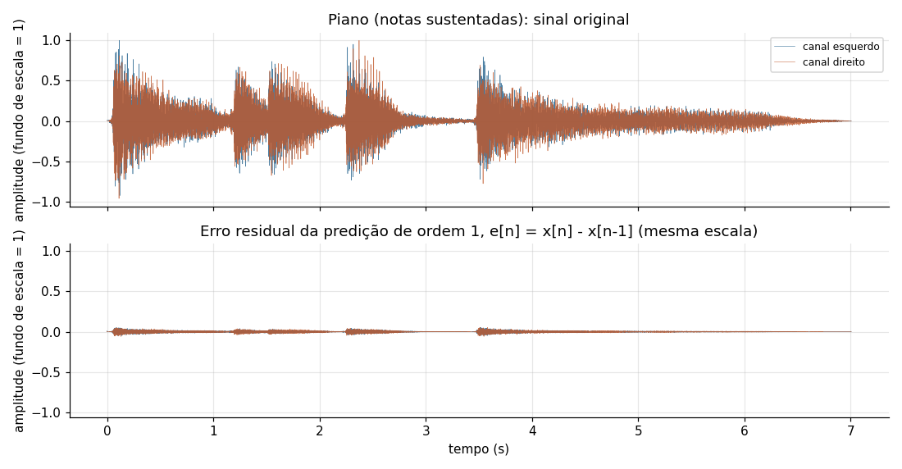
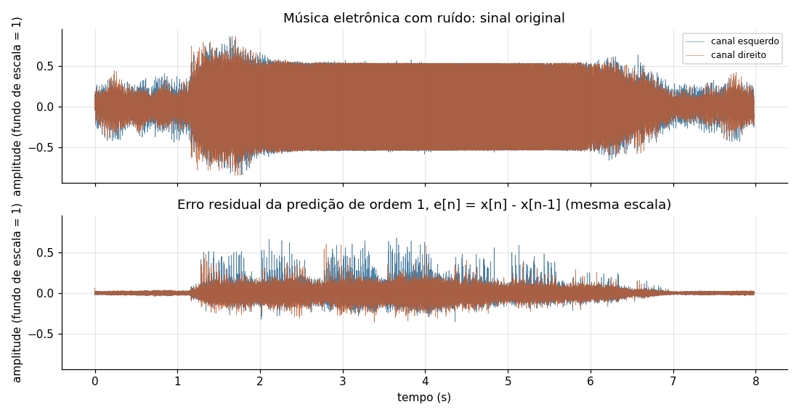
Observações dos analistas de áudio
Piano
O arquivo tem 16 bits, 44,1 kHz e dois canais. A forma de onda mostra ataques seguidos de decaimento lento, com ataques em cerca de 0,05 s, 1,2 s, 1,5 s, 2,25 s e 3,45 s, e um final longo e baixo até 7,0 s. O pico chega ao fundo de escala (32767) em apenas 2 amostras. A fórmula do notebook (canais × amostras × bytes) dá 1.235.676 bytes, e o arquivo tem 1.239.772 bytes: a diferença de 4.096 bytes é o cabeçalho, que inclui um bloco "PAD " de 4.044 bytes. É esse bloco que causa o aviso "Chunk (non-data) not understood" do scipy.
Música eletrônica com ruído
O arquivo é float32 (4 bytes por amostra), 48 kHz e dois canais. Testamos a resolução real: 100% das amostras são múltiplos de 1/223, ou seja, o áudio tem 24 bits efetivos guardados em float. Em PCM de 24 bits ele ocuparia 2.298.300 bytes em vez de 3.064.400. O cabeçalho tem só 88 bytes (blocos fact e PEAK). Entre cerca de 1,2 s e 5,8 s o envelope fica quase constante perto de ±0,53, com muitas amostras acumuladas nesse valor, o que indica compressão forte de dinâmica. Os canais têm correlação de -0,577, ou seja, são bem diferentes entre si.
Os players acima tocam o arquivo FLAC gerado pelo script. Ele é idêntico amostra por amostra ao WAV original (verificado decodificando e comparando). O player do resíduo toca o erro e[n] como se fosse áudio: soa como uma versão sem graves e mais baixa do original.
Parte B: predição linear de ordem 1 e entropia do áudio
A predição usa a amostra anterior: x̂[n] = x[n-1], com x̂[0] = 0. O erro é e[n] = x[n] - x[n-1]. A reconstrução é a soma acumulada x[n] = e[0] + e[1] + ... + e[n], que devolveu os dois arquivos sem nenhuma diferença.
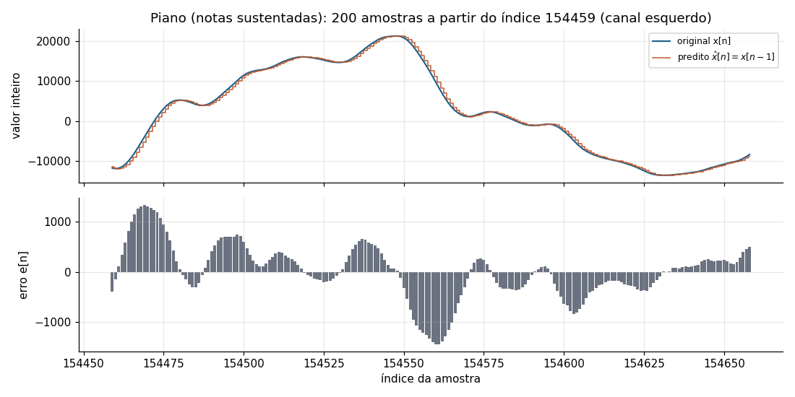
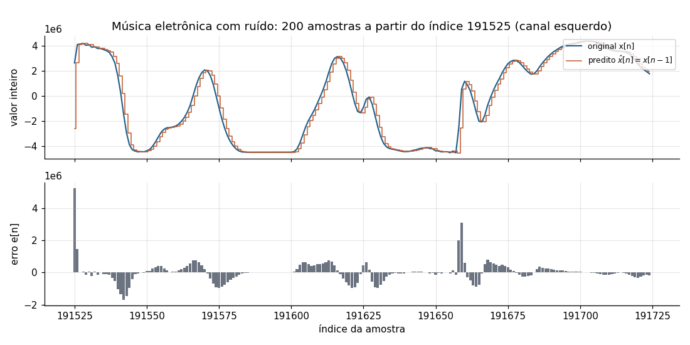
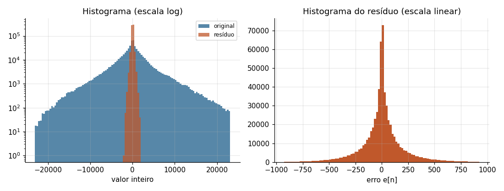
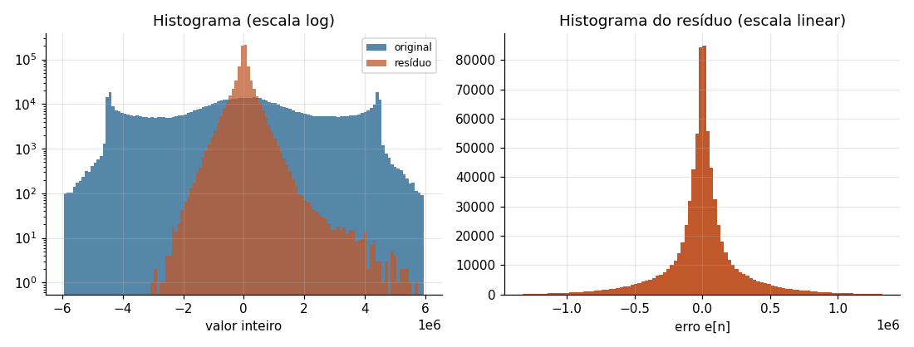
![Dois gráficos de densidade espectral em dB pela frequência em escala logarítmica. No piano, a curva do original cai de cerca de -40 dB nas frequências baixas para cerca de -130 dB em 20 kHz; o resíduo fica cerca de 35 dB abaixo do original em 100 Hz e cerca de 17 dB abaixo em 1 kHz, encosta no original perto de 5 kHz e passa um pouco acima dele depois de 10 kHz. Na música eletrônica, o original é mais plano, de -40 dB a -95 dB, e o resíduo fica abaixo do original até alguns kHz; acima de 5 kHz as duas curvas praticamente se sobrepõem.](img/graficos/audio_espectro.png)
Respostas às perguntas do roteiro
O que a análise estatística do erro residual mostra?
A média do erro é praticamente zero nos dois áudios (o preditor não tem viés), e o que muda é a dispersão. No piano o desvio padrão cai de 4.386,7 para 206,8 no canal esquerdo, um ganho de predição de 26,5 dB. Na música eletrônica cai de 2.611.259 para 315.352 (em níveis de 24 bits), um ganho de 18,4 dB. O valor do notebook, 0,0361, é o mesmo resultado na escala de -1 a 1 com os dois canais juntos. Ou seja, a predição reduz a energia do sinal nos dois casos, mas bem menos na música eletrônica.
E o histograma do erro residual?
O histograma do original é largo, e o do resíduo é estreito e pontudo em torno de zero, com forma parecida com uma distribuição de Laplace. No piano o desvio padrão do resíduo é 21 vezes menor que o do sinal, e 1,32% dos erros são exatamente zero. Na eletrônica o desvio cai só 8 vezes e menos de 0,01% dos erros são zero. Na música eletrônica o pico também existe, mas as caudas são longas: aparecem erros de até 0,68 do fundo de escala nas transições bruscas, que são as barras grandes no gráfico de 200 amostras.
O que se pode falar da predição linear realizada?
Ela funciona bem quando o sinal muda devagar de uma amostra para a próxima, que é o caso do piano: a energia do piano está quase toda abaixo de 5 kHz (menos de 0,1% acima disso), e o preditor x[n] - x[n-1] atenua 36,9 dB em 100 Hz e 16,9 dB em 1 kHz. Ele falha onde o sinal tem conteúdo de alta frequência, porque amplifica a partir de fs/6 (até +6 dB em fs/2). Na música eletrônica, a parte do resíduo acima de 5 kHz sobe de 0,2% para 12,7% da potência, e o resíduo ainda é suave (correlacionado), o que mostra que um preditor de ordem maior tiraria mais redundância. O FLAC, que usa preditores de ordem maior, confirma: no piano ele cai de 8,92 bits por amostra (só ordem 1) para 5,07 bits; na eletrônica, de 19,69 para 17,14 bits.
Comparando as entropias (check list do bloco B)
No piano a entropia cai de 13,25 bits (original) para 9,30 e 9,47 bits (resíduo dos canais esquerdo e direito), cerca de 4 bits a menos por amostra. O FLAC com preditor fixo de ordem 1, que é exatamente o preditor do roteiro, gastou 8,92 bits por amostra, perto da entropia.
Na música eletrônica a conta precisa de cuidado. A entropia calculada pelo método do notebook (contar os valores) dá 18,48 bits no original e 17,92 bits no resíduo, mas nenhuma das duas pode passar de log2(383.050) = 18,55 bits, porque com 24 bits e só 383.050 amostras por canal quase todo valor aparece uma única vez. A estimativa fica saturada e esconde a diferença. Ajustando uma distribuição de Laplace ao resíduo, a entropia estimada é 19,91 bits, e o FLAC de ordem 1 gastou 19,69 bits, contra 23,31 bits sem predição. Então a predição economiza cerca de 3,6 bits por amostra na eletrônica, contra cerca de 4,3 bits no piano, e sobra muito mais informação: 82% dos 24 bits na eletrônica, contra 56% dos 16 bits no piano.
Parte C: análise da imagem e filtro de Paeth
O filtro de Paeth prevê o pixel X a partir do vizinho da esquerda (a), de cima (b) e de cima à esquerda (c). Ele calcula p = a + b - c e escolhe o vizinho mais próximo de p, com desempate na ordem a, b, c. Vizinhos fora da imagem valem 0. O exemplo do notebook (a = 100, b = 150, c = 80) dá p = 170, distâncias 70, 20 e 90, e o preditor escolhe b = 150, como o grupo obteve.
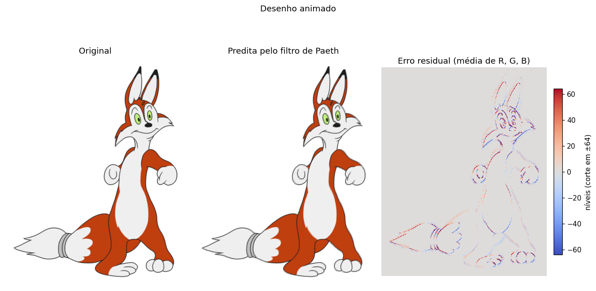
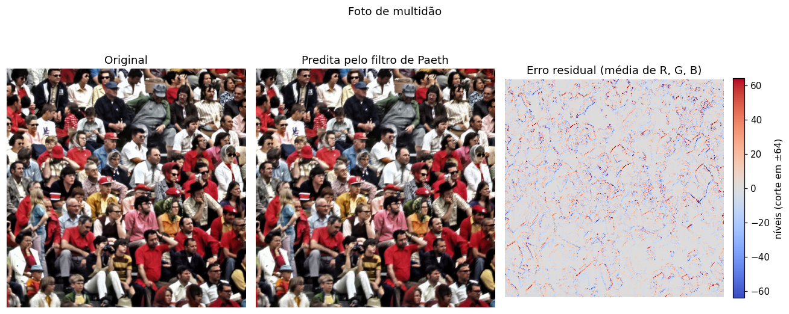
Respostas às perguntas do roteiro
Que análise se pode fazer comparando a original com a predição?
Nas duas imagens a predita parece igual à original quando vista inteira, porque o Paeth copia um vizinho real. As diferenças ficam nas bordas: no desenho, a predita tem os contornos pretos levemente deslocados, e no resto o valor é exato (92,66% dos pixels têm R, G e B previstos sem erro). Na multidão só 3,32% dos pixels são previstos exatamente, porque quase todo pixel é borda ou textura (rostos, cabelos, roupas).
O que as estatísticas dos erros residuais informam?
A média é quase zero nas duas (0,08 e -0,03 níveis). O desvio padrão é 8,48 no desenho e 12,60 na multidão, e a diferença real está na concentração: no desenho 93,36% dos erros são exatamente zero, e na multidão só 9,67%, embora 71,75% fiquem entre -8 e 8. As estatísticas "normalizadas" do notebook (média 0,5052 e 0,3323; desvio 0,0277 e 0,0285) dependem do mínimo e do máximo de cada imagem: a média normalizada é só a posição do zero na escala, e por isso não servem para comparar as duas imagens.
O que o plot do erro residual indica?
O mapa é neutro (erro zero) nas áreas de cor lisa e só acende nos contornos. No desenho isso desenha o traço do personagem; na multidão o mapa inteiro fica com textura, sem áreas lisas. Isso mostra onde a predição falha: em transições de intensidade, que são justamente a informação nova que o codificador precisa guardar.
Parte D: distribuição do erro e entropia da imagem
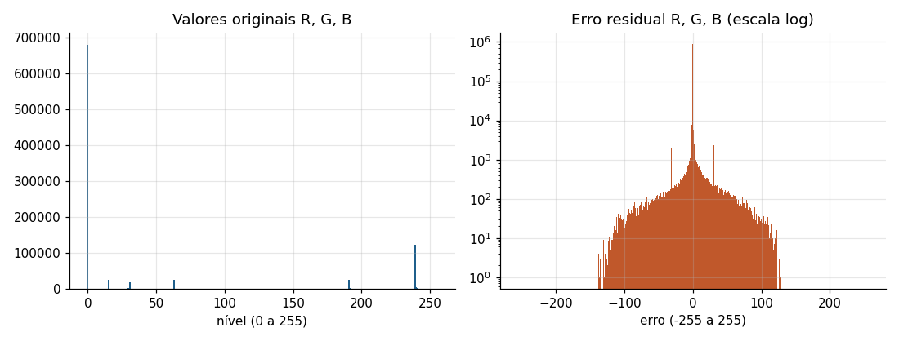
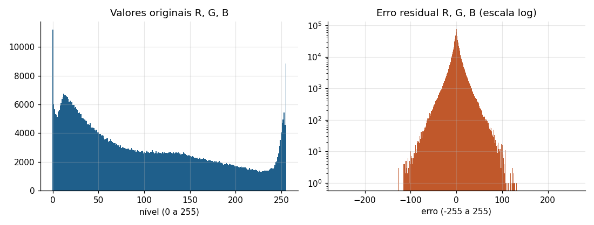
Respostas às perguntas do roteiro
Os gráficos das distribuições dos erros fornecem quais informações?
O histograma dos valores originais é espalhado (na multidão ocupa quase toda a faixa de 0 a 255; no desenho se concentra em poucas cores: branco, laranja, preto e o fundo transparente). O histograma do erro é um pico estreito em zero. No desenho o pico tem 93,36% das amostras e as caudas vêm só dos contornos. Na multidão o pico é mais largo e as caudas vão de -127 a 133. Quanto mais estreito o pico, menos bits por símbolo o codificador de entropia precisa.
Comparando as entropias, o que se pode concluir?
No desenho a entropia cai de 1,89 para 0,77 bits por subpixel (59% menor) e na multidão de 7,84 para 5,31 bits (32% menor). A multidão é quase incompressível sem predição (7,84 de 8 bits) e continua cara depois dela. O tamanho real confirma: com filtro Paeth em todas as linhas, o PNG da multidão tem 563.627 bytes contra 789.286 sem filtro (29% menor), mas ainda é 53,8% do tamanho bruto. O desenho fica em 6,0% do bruto.
Um resultado que não esperávamos: no desenho o PNG sem filtro (65.782 bytes) ficou menor que o PNG com Paeth (75.486 bytes), apesar da entropia do resíduo ser menor. A entropia de ordem zero olha cada símbolo isolado, mas o compressor do PNG (deflate) também aproveita repetições longas, como uma linha igual à de cima. Num desenho com poucas cores essas repetições já existem no original, e o filtro troca os contornos por valores de erro variados que quebram as repetições. Por isso o PNG permite escolher o filtro linha a linha.
Visualizadores interativos
Predição de ordem 1 trecho a trecho
Escolha o áudio e a posição. O gráfico mostra 256 amostras do canal esquerdo: em cima o original (linha) e o predito (degraus), embaixo o erro. O resumo ao lado é lido pelo leitor de tela.
Filtro de Paeth pixel a pixel
Clique na imagem ou digite as coordenadas x (coluna) e y (linha). Com o foco na imagem, as setas mudam o pixel. A tabela mostra a conta do Paeth para cada canal. Os valores dos pixels são lidos no navegador a partir de cópias PNG sem perdas embutidas no dados.js.
Ampliação 7 × 7: X é o pixel escolhido; a, b e c são os vizinhos usados. Pixels transparentes aparecem em branco e posições fora da imagem em cinza.
Quadro comparativo
Resumo pedido para os slides 2 e 3 do roteiro: antes e depois, resíduos, entropias e tamanhos dos quatro arquivos do grupo.
Comparação com o grupo 4 e com a turma
Para a conclusão geral, rodamos o mesmo script em todos os arquivos da pasta do laboratório (grupos 1 a 7). Os valores são calculados por nós e podem diferir dos que cada grupo mostrou na apresentação, porque corrigem os problemas dos notebooks. O grupo 4 é o que filmamos.
Apresentações gravadas e discussão
Discussão em sala
Quais características dos áudios e das imagens favoreceram ou dificultaram a predição e a compressão sem perdas? (slide 5)
Favoreceram: variação lenta entre amostras vizinhas (notas sustentadas do piano, energia concentrada abaixo de 5 kHz) e grandes áreas de cor uniforme (desenho animado). Dificultaram: conteúdo de alta frequência e transições bruscas (ruído e ataques da música eletrônica), resolução de 24 bits com bits baixos sem estrutura, e bordas e texturas em toda a imagem (multidão).
Pergunta para o grupo 3: por que a predição falhou tanto com a música eletrônica e a foto de multidão?
Na música eletrônica, o preditor de ordem 1 só cancela as frequências baixas; o ruído e os ataques têm energia em frequências altas, que passam para o resíduo (12,7% da potência do resíduo está acima de 5 kHz) e geram erros de até 0,68 do fundo de escala. O ganho de predição foi 18,6 dB contra 26,1 dB no piano. Na multidão, cada pixel difere dos vizinhos por causa das texturas, então só 9,67% dos erros são zero e a entropia continua em 5,31 bits. As principais "falhas" foram, portanto, as transições: ataques e ruído no áudio, contornos e texturas na imagem.
Considerando os dois grupos, o que limita a compressão sem perdas?
A quantidade de redundância do sinal. Os arquivos do grupo 4 seguem o mesmo padrão dos nossos: a guitarra limpa (acorde G) fica em 3,56 bits por amostra no FLAC e o show ao vivo em 12,05 bits, assim como o piano (5,07) e a eletrônica (17,14 bits de 24). Na imagem, a cena urbana fica em 52,6% do bruto com Paeth, perto da multidão (53,8%). O caso limite está nos arquivos de ruído do grupo 7: no ruído branco a predição piora o sinal (ganho de -3,0 dB, porque a diferença de duas amostras independentes dobra a variância) e o FLAC de ordem 1 gasta mais bits que o de ordem 0 (17,71 contra 17,04). Sem redundância, nenhum preditor ajuda e a compressão sem perdas não tem o que tirar.
Conclusões
- A predição é exata e reversível. Os quatro arquivos foram reconstruídos sem nenhuma diferença a partir do resíduo (soma acumulada no áudio e decodificador PNG na imagem), e os FLAC gerados são idênticos aos WAV originais.
- Sinais previsíveis comprimem muito mais. O piano foi para 31,6% do WAV em FLAC e o desenho para 6,0% do tamanho bruto em PNG com Paeth; a música eletrônica ficou em 53,6% do WAV (71,4% do PCM de 24 bits) e a multidão em 53,8% do bruto.
- A entropia do resíduo cai, mas não na mesma proporção. Piano: de 13,25 para cerca de 9,4 bits por amostra. Desenho: de 1,89 para 0,77 bits. Multidão: de 7,84 para 5,31 bits. Na eletrônica a estimativa por contagem satura em 18,55 bits e não serve para comparar; o FLAC de ordem 1 mostra a queda real, de 23,31 para 19,69 bits por amostra.
- O preditor de ordem 1 é um passa-altas. Ele atenua 16,9 dB em 1 kHz e amplifica até 6 dB em fs/2, por isso funciona no piano (ganho de 26,1 dB) e funciona pior na eletrônica (18,6 dB) e no ruído branco (-3,0 dB).
- A entropia de ordem zero não conta tudo. No desenho o PNG sem filtro (65.782 bytes) foi menor que o PNG com Paeth (75.486 bytes), porque o deflate aproveita repetições longas que a entropia símbolo a símbolo não mede. O FLAC também ficou abaixo da entropia do resíduo de ordem 1 no piano (5,07 contra 9,38 bits), por usar preditores de ordem maior e ajustar o código a cada bloco.
- O tipo de dado importa. Ler a imagem em float32 criou 890 símbolos onde existiam 297 e mudou a entropia do desenho de 0,6724 para 0,7287 bits; o canal alfa constante baixou a entropia da multidão de 5,3127 para 4,5478 bits; e o áudio "float" era, na verdade, de 24 bits.
- Lição final do roteiro. A eficiência da compressão sem perdas acompanha a redundância do sinal: do violino (3,16 bits por amostra de 16) ao ruído branco (18,05 bits de 24), e do pixel isolado (0,003 bits) à imagem de ruído (8,03 bits, maior que o original).
Experiência com o leitor de tela NVDA
Para o grupo revisar Este texto foi escrito com base no site como ele está. O grupo deve fazer o teste com o NVDA e corrigir as respostas com o que realmente aconteceu.
Tarefas feitas com o NVDA
- Navegar pelos títulos com a tecla H e pela lista de títulos (NVDA + F7) e encontrar a parte D.
- Ler a tabela "Entropia e tamanhos reais em PNG" com Ctrl + Alt + setas e dizer qual imagem tem a maior entropia do resíduo.
- Ouvir a descrição de um gráfico (texto alternativo) da parte B.
- No visualizador de áudio, mudar a posição com as setas e ouvir o resumo atualizado.
- No visualizador do Paeth, digitar x e y e ouvir qual vizinho o filtro escolheu.
O que compreendemos
Conseguimos chegar a cada parte do relatório pelos títulos, sem passar por todo o texto. As tabelas são lidas com o cabeçalho de linha e de coluna, então dá para saber a que arquivo e a que medida cada número se refere. Os textos alternativos dos gráficos trazem os valores principais, e com eles foi possível entender o resultado sem ver a imagem.
Que dificuldades encontramos
Os gráficos com muitas curvas ficam longos para ouvir, e não é possível "explorar" a curva ponto a ponto. Os números com muitas casas decimais são lidos dígito a dígito quando o NVDA não reconhece o formato. No visualizador do Paeth, a imagem em si não tem como ser percebida pelo leitor; só a tabela da conta.
Que mudanças faríamos
Arredondar mais os números do texto corrido, oferecer os dados de cada gráfico também em tabela, e no visualizador de imagem descrever a cor do pixel em palavras (por exemplo, "laranja escuro") além dos valores R, G e B.